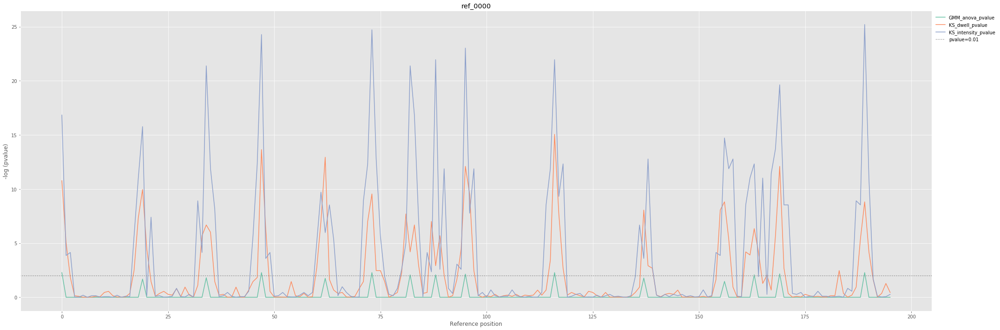
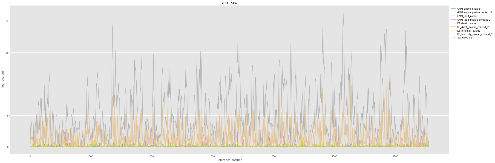
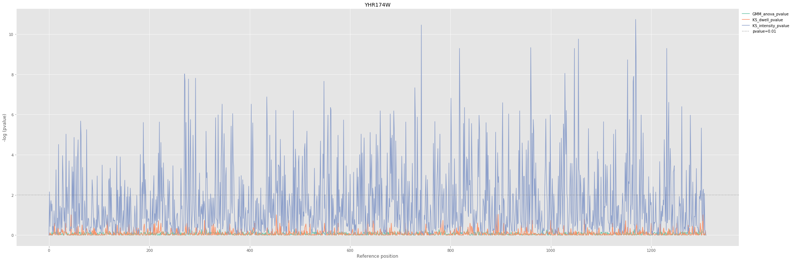
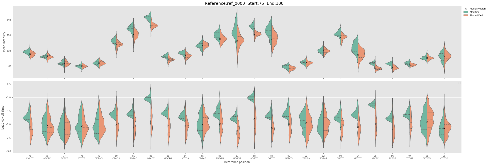
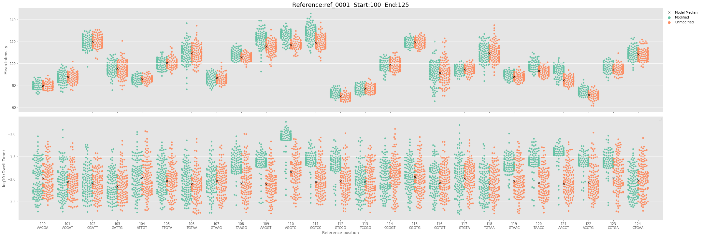
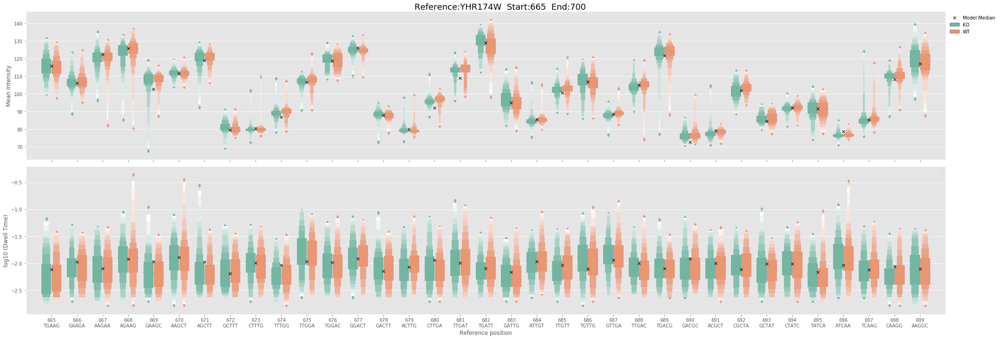
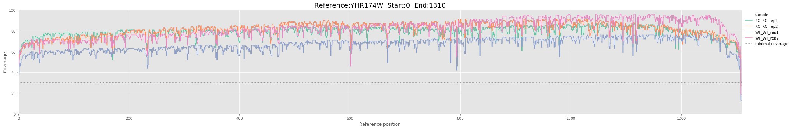
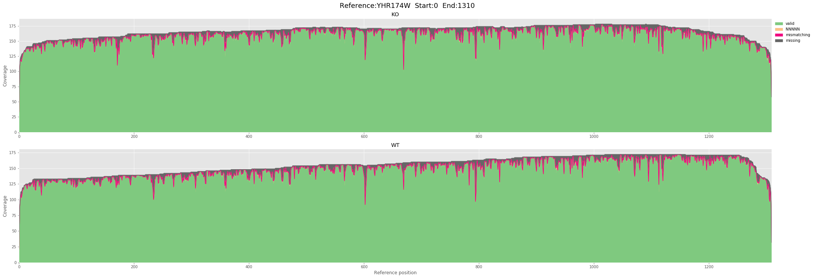
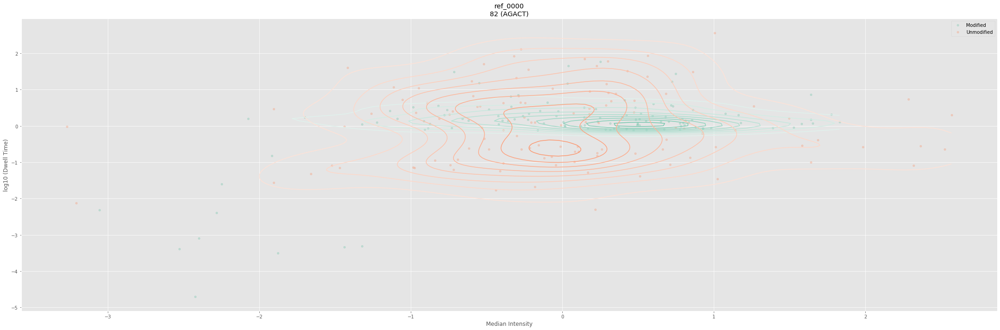

Generate plots and tables with SampCompDB
SampComp creates a python object database (shelve DBM) containing the statistical analysis results. The API directly returns a SampCompDB object wrapping the shelve DB. It is also possible to reload the SampCompDB latter using the db file path prefix. SampCompDB also need a FASTA file to get the corresponding reference id sequence and accept an optional BED file containing genomic annotations. SampCompDB provide a large selection of simple high level function to plot and export the results.
At the moment SampCompDB is only accessible through the python API.
Import the package
from nanocompore.SampCompDB import SampCompDB, jhelp
Load the database with SampCompDB
jhelp (SampCompDB)
SampCompDB (db_fn, fasta_fn, bed_fn, run_type, log_level)
Wrapper over the result shelve SampComp
- db_fn (required) [str]
Path to a database file previously created with SampComp
- fasta_fn (required) [str]
Path to a fasta file corresponding to the reference used for read alignemnt
- bed_fn (default: None) [str]
Path to a BED file containing the annotation of the transcriptome used as reference when mapping
- run_type (default: RNA) [str]
Define the run type model to import {RNA, DNA}
- log_level (default: info) [str]
Set the log level. {warning,info,debug}"
Basic initialisation
# Load database db = SampCompDB ( db_fn = "results/simulated_SampComp.db", fasta_fn = "references/simulated/ref.fa") # Print general metadata information print (db) # Prit list of references containing valid data print (db.ref_id_list)
Loading SampCompDB Calculate results [SampCompDB] package_name: nanocompore package_version: 1.0.0rc3-dev timestamp: 2019-06-19 14:11:42.582069 comparison_methods: ['GMM', 'KS'] pvalue_tests: ['GMM_anova_pvalue', 'KS_dwell_pvalue', 'KS_intensity_pvalue'] sequence_context: 0 min_coverage: 30 n_samples: 4 Number of references: 5 ['ref_0002', 'ref_0000', 'ref_0003', 'ref_0001', 'ref_0004']
Generate text reports
SampCompDB can generate 3 types of text reports:
* Tabulated statistics => save_report
* Tabulated intensity and dwell values per conditions => save_shift_stats
* BED significant genomic positions => save_to_bed
In addition, we also conveniently wrapped all 3 methods in save_all.
save_report
jhelp(SampCompDB.save_report)
save_report (output_fn)
Saves a tabulated text dump of the database containing all the statistical results for all the positions
- output_fn (default: None) [str]
Path to file where to write the data. If None, data is returned to the standard output.
# Reload DB db = SampCompDB (db_fn = "results/simulated_SampComp.db", fasta_fn = "references/simulated/ref.fa", log_level="warning") # Save report db.save_report (output_fn="./results/simulated_report.tsv") # Visualise first lines !head "./results/simulated_report.tsv"
pos chr genomicPos ref_id strand ref_kmer GMM_anova_pvalue KS_dwell_pvalue KS_intensity_pvalue GMM_cov_type GMM_n_clust cluster_counts Anova_delta_logit 0 NA NA ref_0002 NA AAGGA 0.010390555392639545 3.7826176625121133e-28 7.372203704353806e-13 full 2 Modified_rep1:4/51__Modified_rep2:4/56__Unmodified_rep1:39/16__Unmodified_rep2:49/11 -3.5291008135000004 1 NA NA ref_0002 NA AGGAC 0.018531016868604602 5.021033530354203e-38 2.6192924303287954e-32 full 2 Modified_rep1:49/6__Modified_rep2:54/6__Unmodified_rep1:0/55__Unmodified_rep2:3/57 5.363518116 2 NA NA ref_0002 NA GGACT 0.016650130591381845 9.083535018319583e-23 1.9347009060981327e-19 full 2 Modified_rep1:48/7__Modified_rep2:53/7__Unmodified_rep1:13/42__Unmodified_rep2:7/53 3.3768032759999995 3 NA NA ref_0002 NA GACTG nan 1.5167780008574906e-20 5.038173683218352e-10 full 1 NC nan 4 NA NA ref_0002 NA ACTGC nan 0.7103128384794648 0.2143969244232542 full 1 NC nan 5 NA NA ref_0002 NA CTGCG nan 0.5427546298577994 0.9441367354284554 full 1 NC nan 6 NA NA ref_0002 NA TGCGC nan 0.6283003014678024 0.2835540266938749 full 1 NC nan 7 NA NA ref_0002 NA GCGCC nan 0.7818041839421846 0.2143969244232542 full 1 NC nan 8 NA NA ref_0002 NA CGCCG nan 0.4544427448826311 0.8445913073368677 full 1 NC nan
save_shift_stats
jhelp(SampCompDB.save_shift_stats)
save_shift_stats (output_fn)
Save the mean, median and sd intensity and dwell time for each condition and for each position. This can be used to evaluate the intensity of the shift for significant positions.
- output_fn (default: None)
Path to file where to write the data. If None, data is returned to the standard output.
# Reload DB db = SampCompDB (db_fn = "results/simulated_SampComp.db", fasta_fn = "references/simulated/ref.fa", log_level="warning") # Save report db.save_shift_stats (output_fn="./results/simulated_shift.tsv") # Visualise first lines !head "./results/simulated_shift.tsv"
red_if pos c1_mean_intensity c2_mean_intensity c1_median_intensity c2_median_intensity c1_sd_intensity c2_sd_intensity c1_mean_dwell c2_mean_dwell c1_median_dwell c2_median_dwell c1_sd_dwell c2_sd_dwell ref_0001 0 99.31924275131445 95.20865205128713 99.30450652082747 95.48506067828346 3.4542546529463602 3.2457394860292355 0.02892371350987724 0.011492822977360408 0.026110578053659444 0.008409393806440126 0.012309163786594407 0.010097740816656625 ref_0001 1 95.8472415436861 86.76320109231014 96.51658647295791 86.5897261563199 4.818212253968896 3.462616900325914 0.049904028745349535 0.014284063287085003 0.049430992173562574 0.00838888597355578 0.01891436186841055 0.01469932192592977 ref_0001 2 99.95956311201668 91.94076655256666 99.2359574515384 91.66515374416255 6.732308978957026 5.022072514781664 0.027605907187015038 0.013686251128416578 0.024211963436724607 0.009798007086063236 0.014206789096974112 0.01220646673010648 ref_0001 3 123.38251652061109 120.39646776876853 123.6421269382127 120.37875855935422 3.595296347867109 3.44338463383404 0.028760344887274834 0.013945564031975161 0.02351276462197541 0.010354002459941074 0.017565155869793847 0.011016717175902649 ref_0001 4 126.94163302104937 128.10426869865935 126.55839976875221 127.8992550363245 3.673183364723787 4.450043557112173 0.011798347544928565 0.013913244140038266 0.008085339548882277 0.009808706553017481 0.010235524821933415 0.012247487588286306 ref_0001 5 67.79566862215866 67.87066906855172 67.57337199388174 67.66864765166001 2.676099462286074 2.3271061496852905 0.011811464983494136 0.012975245722562987 0.007659091594070025 0.007913024971489328 0.01114312094701346 0.013957539542755816 ref_0001 6 66.155214143451 65.87786841257429 66.01760504576498 65.80903439895116 1.5942871182383656 1.9921259312963864 0.013708376752126073 0.012800371955813343 0.009551895684442788 0.008605404284103613 0.014921164088938836 0.011530961046002914 ref_0001 7 69.61169482565616 68.99766496300363 69.41928437670197 68.95292840911311 2.936936891666408 2.575355539206547 0.011149410753827556 0.011084327064933388 0.008581162093140242 0.007464155848405434 0.009824895741362088 0.01064339382049097 ref_0001 8 82.34611997642149 82.05089836082209 82.24692305018203 81.9154038674852 2.5845230611008763 2.4502360451089737 0.01267473742329643 0.012320988335592328 0.010373590682259867 0.009046996378582178 0.009070752556799426 0.00959451914969272
save_to_bed
jhelp(SampCompDB.save_to_bed)
save_to_bed (output_fn, bedgraph, pvalue_field, pvalue_thr, span, convert, assembly, title)
Save the position of significant positions in the genome space in BED6 or BEDGRAPH format.
The resulting file can be used in a genome browser to visualise significant genomic locations.
The option is only available if SampCompDB if initialised with a BED file containing genome annotations.
- output_fn (default: None)
Path to file where to write the data
- bedgraph (default: False)
save file in bedgraph format instead of bed
- pvalue_field (default: None)
specifies what column to use as BED score (field 5, as -log10)
- pvalue_thr (default: 0.01)
only report positions with pvalue<=thr
- span (default: 5)
The size of each BED feature. If size=5 (default) features correspond to kmers. If size=1 features correspond to the first base of each kmer.
- convert (default: None)
one of 'ensembl_to_ucsc' or 'ucsc_to_ensembl". Convert chromosome named between Ensembl and Ucsc conventions
- assembly (default: None)
required if convert is used. One of "hg38" or "mm10"
- title (default: None)
# Reload DB db = SampCompDB (db_fn = "results/simulated_SampComp.db", fasta_fn = "references/simulated/ref.fa", bed_fn="references/simulated/annot.bed", log_level="warning") # Save report db.save_to_bed (output_fn="./results/simulated_sig_positions.bed") # Visualise first lines !head "./results/simulated_sig_positions.bed"
Generate plots
SampCompDB comes with a range of methods to visualise the data and explore candidates.
plot_pvalue: Plot the-log(10)of the pvalues obtained for all the statistical methods at reference levelplot_signal: Generate comparative plots of both median intensity and dwell time for each condition at read levelplot_coverage: Plot the read coverage over a reference for all samples analysedplot_kmers_stats: Fancy version ofplot_coveragethat also report missing, mismatching and undefined kmers status from Nanopolishplot_position: Allow to visualise the distribution of intensity and dwell time in 2D for a single position
Extra imports for the plotting library
Matplotlib is required to use the ploting methods in Jupyter
import matplotlib.pyplot as pl %matplotlib inline
plot_pvalue
jhelp(SampCompDB.plot_pvalue)
plot_pvalue (ref_id, start, end, kind, threshold, figsize, palette, plot_style, tests)
Plot pvalues per position (by default plot all fields starting by "pvalue")
- ref_id (required) [str]
Valid reference id name in the database
- start (default: None) [int]
Start coordinate
- end (default: None) [int]
End coordinate (included)
- kind (default: lineplot) [str]
kind of plot to represent the data. {lineplot,barplot}
-
threshold (default: 0.01) [float]
-
figsize (default: (30, 10)) [tuple]
Length and heigh of the output plot
- palette (default: Set2) [str]
Colormap. See https://matplotlib.org/users/colormaps.html, https://matplotlib.org/examples/color/named_colors.html
- plot_style (default: ggplot) [str]
Matplotlib plotting style. See https://matplotlib.org/users/style_sheets.html
- tests (default: None) [str]
Limit the pvalue methods shown in the plot. Either a list of methods or a string coresponding to a part of the name
Examples from simulated dataset
# Reload DB db = SampCompDB (db_fn = "results/simulated_SampComp.db", fasta_fn = "references/simulated/ref.fa", log_level="warning") # Plot fig, ax = db.plot_pvalue ("ref_0000")

# Reload DB db = SampCompDB (db_fn = "results/simulated_stats_SampComp.db", fasta_fn = "references/simulated/ref.fa", log_level="warning") # Plot fig, ax = db.plot_pvalue ("ref_0001", palette="Set1")

Example from real yeast dataset with extended sequence context
# Reload DB db = SampCompDB (db_fn = "results/yeast_SampComp.db", fasta_fn = "references/yeast/Yeast_transcriptome.fa", log_level="warning") # Plot fig, ax = db.plot_pvalue ("YHR174W")

plot_signal
jhelp(SampCompDB.plot_signal)
plot_signal (ref_id, start, end, kind, split_samples, figsize, palette, plot_style)
Plot the dwell time and median intensity distribution position per position Pointless for more than 50 positions at once as it becomes hard to distinguish
- ref_id (required) [str]
Valid reference id name in the database
- start (default: None) [int]
Start coordinate
- end (default: None) [int]
End coordinate (included)
- kind (default: violinplot) [str]
Kind of plot {violinplot, boxenplot, swarmplot}
- split_samples (default: False) [bool]
If samples for a same condition are represented separatly. If false they are merged per condition
- figsize (default: (30, 10)) [tuple]
Length and heigh of the output plot
- palette (default: Set2) [str]
Colormap. See https://matplotlib.org/users/colormaps.html, https://matplotlib.org/examples/color/named_colors.html
- plot_style (default: ggplot) [str]
Matplotlib plotting style. See https://matplotlib.org/users/style_sheets.html
Examples from simulated dataset
# Reload DB db = SampCompDB (db_fn = "results/simulated_SampComp.db", fasta_fn = "references/simulated/ref.fa", log_level="warning") # Plot fig, ax = db.plot_signal ("ref_0000", start=75, end=100)

# Reload DB db = SampCompDB (db_fn = "results/simulated_SampComp.db", fasta_fn = "references/simulated/ref.fa", log_level="warning") # Plot fig, ax = db.plot_signal ("ref_0001", start=100, end=125, kind="swarmplot")

Example from real yeast dataset
# Reload DB db = SampCompDB (db_fn = "results/yeast_SampComp.db", fasta_fn = "references/yeast/Yeast_transcriptome.fa", log_level="warning") # Plot fig, ax = db.plot_signal ("YHR174W", start=665, end=700, kind="boxenplot")

plot_coverage
jhelp(SampCompDB.plot_coverage)
plot_coverage (ref_id, start, end, scale, split_samples, figsize, palette, plot_style)
Plot the read coverage over a reference for all samples analysed
- ref_id (required) [str]
Valid reference id name in the database
- start (default: None) [int]
Start coordinate
- end (default: None) [int]
End coordinate (included)
-
scale (default: False) [bool]
-
split_samples (default: False) [bool]
-
figsize (default: (30, 5)) [tuple]
Length and heigh of the output plot
- palette (default: Set2) [str]
Colormap. See https://matplotlib.org/users/colormaps.html, https://matplotlib.org/examples/color/named_colors.html
- plot_style (default: ggplot) [str]
Matplotlib plotting style. See https://matplotlib.org/users/style_sheets.html
Example from real yeast dataset
# Reload DB db = SampCompDB (db_fn = "results/yeast_SampComp.db", fasta_fn = "references/yeast/Yeast_transcriptome.fa", log_level="warning") # Plot fig, ax = db.plot_coverage ("YHR174W")

plot_kmers_stats
jhelp(SampCompDB.plot_kmers_stats)
plot_kmers_stats (ref_id, start, end, split_samples, figsize, palette, plot_style)
Fancy version of plot_coverage that also report missing, mismatching and undefined kmers status from Nanopolish
- ref_id (required) [str]
Valid reference id name in the database
- start (default: None) [int]
Start coordinate
- end (default: None) [int]
End coordinate (included)
-
split_samples (default: False) [bool]
-
figsize (default: (30, 10)) [tuple]
Length and heigh of the output plot
- palette (default: Accent) [str]
Colormap. See https://matplotlib.org/users/colormaps.html, https://matplotlib.org/examples/color/named_colors.html
- plot_style (default: ggplot) [str]
Matplotlib plotting style. See https://matplotlib.org/users/style_sheets.html
Example from real yeast dataset
# Reload DB db = SampCompDB (db_fn = "results/yeast_SampComp.db", fasta_fn = "references/yeast/Yeast_transcriptome.fa", log_level="warning") # Plot fig, ax = db.plot_kmers_stats ("YHR174W")

plot_position
jhelp(SampCompDB.plot_position)
plot_position (ref_id, pos, split_samples, figsize, palette, plot_style, xlim, ylim, alpha, pointSize, scatter, kde, model, gmm_levels)
Plot the dwell time and median intensity at the given position as a scatter plot.
- ref_id (required) [str]
Valid reference id name in the database
- pos (default: None) [int]
Position of interest
- split_samples (default: False) [bool]
If True, samples for a same condition are represented separately. If False, they are merged per condition
- figsize (default: (30, 10)) [tuple]
Length and heigh of the output plot
- palette (default: Set2) [str]
Colormap. See https://matplotlib.org/users/colormaps.html, https://matplotlib.org/examples/color/named_colors.html
- plot_style (default: ggplot) [str]
Matplotlib plotting style. See https://matplotlib.org/users/style_sheets.html
- xlim (default: (None, None)) [tuple]
A tuple of explicit limits for the x axis
- ylim (default: (None, None)) [tuple]
A tuple of explicit limits for the y axis
-
alpha (default: 0.3) [float]
-
pointSize (default: 20) [int]
int specifying the point size for the scatter plot
- scatter (default: True) [bool]
if True, plot the individual data points
- kde (default: True) [bool]
plot the KDE of the intensity/dwell bivarariate distributions in the two samples
- model (default: False) [bool]
If true, plot the GMM density estimate
- gmm_levels (default: 50) [int]
number of contour lines to use for the GMM countour plot
Example from simulated dataset
# Reload DB db = SampCompDB (db_fn = "results/simulated_SampComp.db", fasta_fn = "references/simulated/ref.fa", log_level="warning") # Plot fig, ax = db.plot_position ("ref_0000", pos=82)
